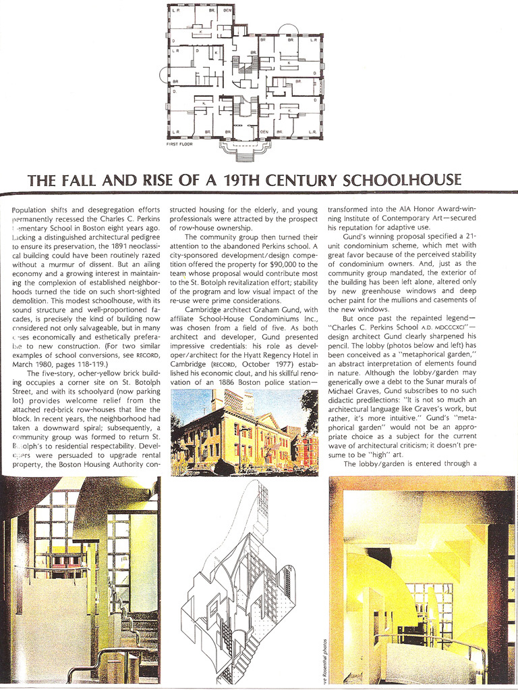
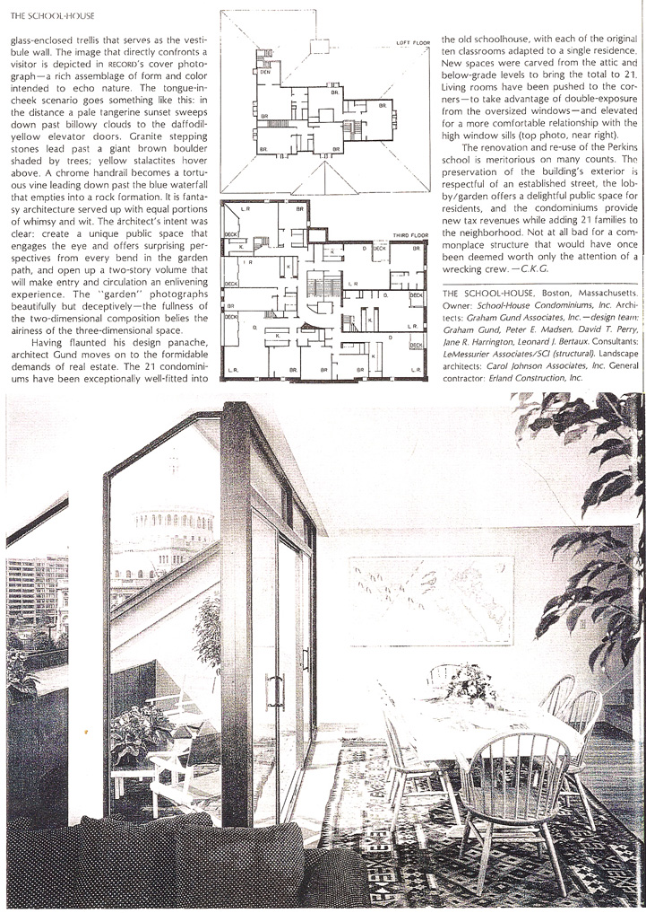
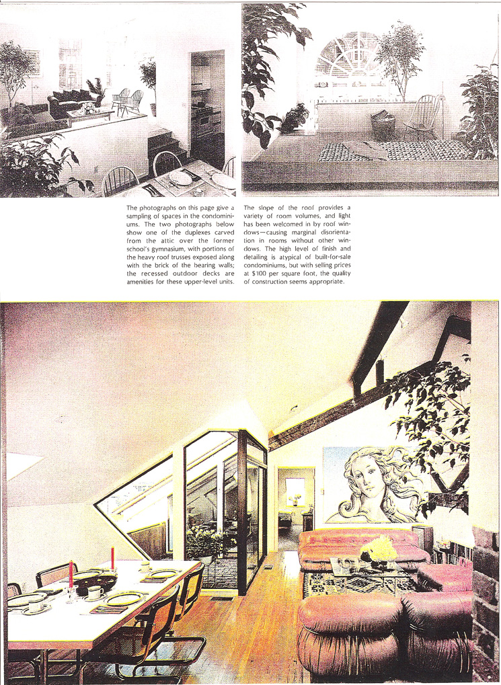
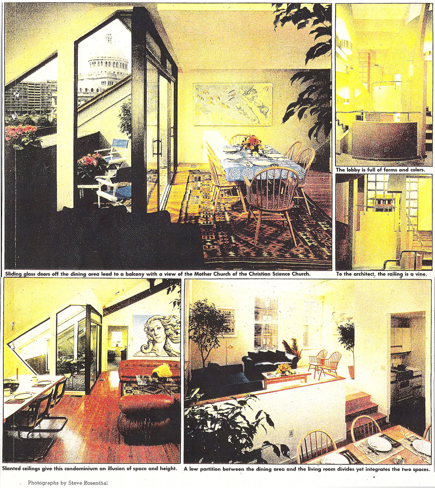
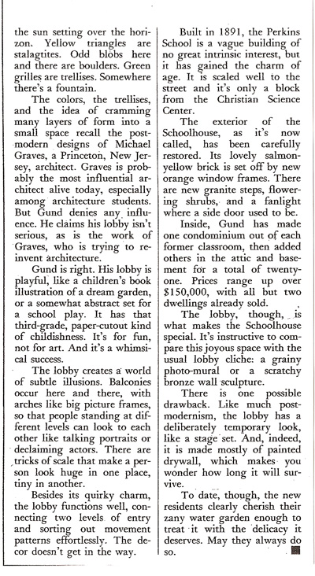

These notes are only for the information of the residents of
The School-House Condominium.
Do not link to this page (or post its userid and password) in any public place; it contains copyrighted content used without permission.
The School-House Condominium building was previously an elementary school — "Charles Perkins School, A.D. MDCCCXCI" read the carved letters above the front door (1901 view).
In 1980, the architect
Graham Gund converted the schoolhouse building into a 21-unit condominium, known at the School-House Condominium. Gund and his firm are
award winning architects who have worked on many impressive projects; see
www.grahamgund.com. In 1981, the building reuse project was written about in
Architectural Record ("The Fall and Rise of a 19th Century Schoolhouse,"
Mid-February 1981, Record Interiors 1981 issue — see below) and in the The Boston Globe
Magazine (Robert Campbell, "Postmodernism Goes to School," July 12, 1981 — see below).
Particularly noted in the magazine pieces was the metaphorical scene of nature
of the condominium building's inner lobby, shown below.
Over the years, the condominium owners (who self manage the building rather than depending on a hired management company) have been good stewards of the building and site. Both the exterior of the building and the inner lobby look more or less as fresh now as they do in the photos from the 1981 magazine pieces. (In the late 1990s the condominium association briefly experimented with hiring a management company. This experiment lasted two years before the owners decided to return to the self-management model which worked better for this condominium association. During that experimental period, a brief article about the condominium was printed in Condo Magazine.
The School-House is within the St. Botolph protected architectural district. The Boston Landmarks Commission report leading to the designation as a protected district is interesting reading. There is also an interesting history of the neighborhood, albeit with a focus on Durham St.
We have some photos and other information from the time of the redevelopment of the building by Gund.
There is some confusion in the published literature about which architect designed the school building originally ca. 1891 (discussed below).
We have some photos and other artifacts from 1991 when the building residents celebrated the centennial of the building's construction.
Jane Brown Gillette wrote an article entitled "In the Gund Style" which starts by mentioning the Schoolhouse and shows a photo of it a few pages in. This was published in Historic Preservation (now Preservation magazine), January-February 1994, pp. 46-53.
Second page

Third page

Fourth (and last) page

Second page

Third page

More details are also available.
The Bowditch School, also by Atwood, has external similarities to our Schoolhouse